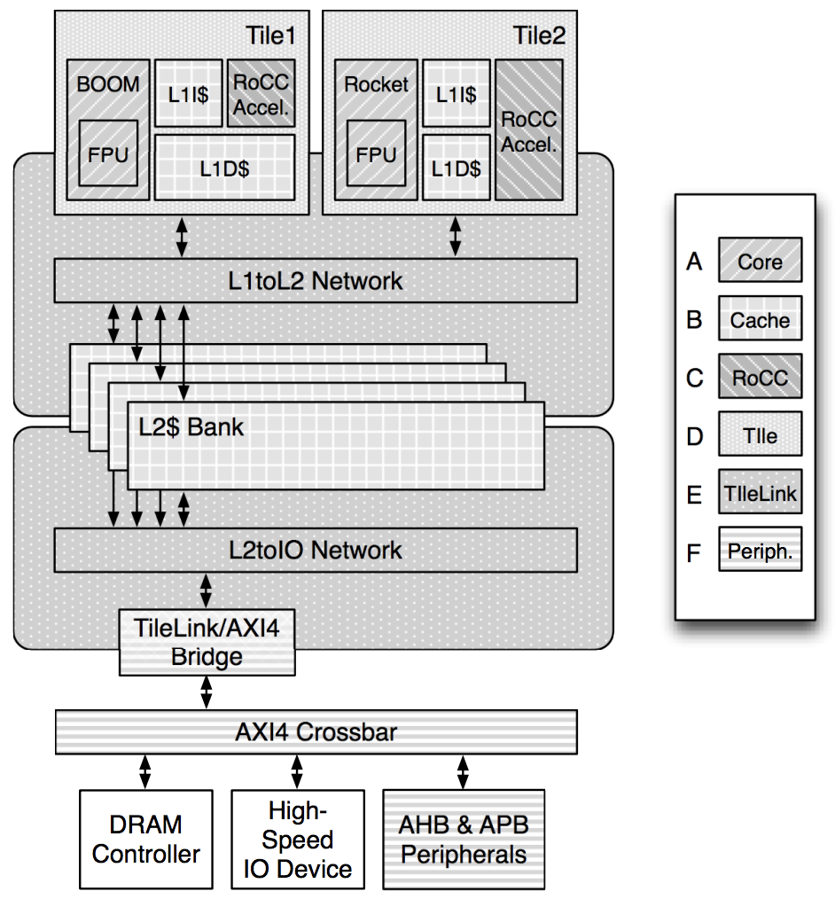

[RISC-V Architecture Training] Demo 4: RocketChip generator
What is RocketChip generator?
- RISC-V SoC generator from UC Berekeley
- Based on Chisel
- Highly parameterized
- Cache configs
- Num of cores
- Type of cores (Rocket, BOOM, w/ FPU, RoCC accelerator)
- Num of ports (memory, system, peripheral)

What is RocketChip generator? / Setup
Clone GIT repo
git clone --recursive https://github.com/chipsalliance/rocket-chip.git
export RISCV=/opt/riscv/rv64gc # need to use matching RISC-V toolchain
export PATH=${RISCV}/bin;${PATH}
Prerequisites
Because RocketChip is using Chisel (a variant of Scala, based on Java), so we need to install JDK before using RocketChip generator.
apt install -y default-jdk
What is RocketChip generator? / Chisel
RocketChip is written in Chisel
- Open-source hardware construction language
- Highly parameterized generator
- Hierarchical + object oriented + functional construction
- Generates Verilog and C model
- Not HLS (high-level synthesis)
- Based on Scala
- Functional programming
- Strong static type system
- Compiled to Java bytecode
If UCB had decided to use SystemVerilog + Python, RocketChip and its ECO system might be much more popular.
Generate CPU with RocketChip generator
@DEMO: Compile and generate C-based emulator
cd emulator
make
ls emulator-freechips.rocketchip.system-*
@DEMO: Compile and generator Verilog
cd vsim
make verilog
cd generated-src
ls freechips.rocketchip.system.*.v
The generated Verilog is human unreadable. A huge problem while debug.
@DEMO: Simulate riscv-tests with C-based emulator
make -j4 run # run all tests
make output/dhrystone.riscv.out # run specific test
Check simulation result
# find the passed ones
grep PASSED output/*.out
# find the failed ones
grep FAILED output/*.out
CPU architecture exploration with RocketChip
@DEMO: Two configration files
~/riscv-git/rocket-chip/src/main/scala/system/Configs.scala
~/riscv-git/rocket-chip/src/main/scala/subsystem/Configs.scala
What you can change
- Core
- 32-bit or 64-bit
- With or without FPU
- With or without virtual memory
- With or without BTB
- Multiplier-divider cycles
- L1 cache (I$ & D$)
- Num of sets
- Block size (set size)
- Ways
- Num of MSHR
- Num of TLB entries
- Cross clock domain
- Sync or async
CPU architecture exploration / example
D-Cache: # of ways vs. Dhrystone performance
-
D-Cache parameters
- Same D$ size = 16KiB
- Number of ways: 16, 8, 4, 2
-
Use Dhyrstone as benchmark
-
class DCacheParamsdefined in~/riscv-git/rocket-chip/src/main/scala/rocket/HellaCache.scala -
New classes of
WithNDCWay16Cores,WithNDCWay8CoresandWithNDCWay2Coresin~/riscv-git/rocket-chip/src/main/scala/subsystem/Configs.scala
| Config | Num of ways | Microseconds for one run through Dhrystone | Dhrystones per Second |
|---|---|---|---|
| DCWay2Config | 2 | x | x |
| DefaultConfig | 4 | 483 | 2069 |
| DCWay8Config | 8 | 483 | 2061 |
| DCWay16Config | 16 | 485 | 2060 |
Â
Ways size MUST be equal or smaller than page size (4KiB)
- To use virtual-index in cache
- Parallel Cache and TLB access
Debug software on RocketChip with GDB
Generate emulator with debug feature
New config with JTAG DTM (debug transport module)
class JtagConfig extends Config(
new WithJtagDTMSystem ++ new WithNBigCores(1) ++ new BaseConfig)
Generate C emulator with JTAG DTM
cd emulator
make CONFIG=JtagConfig
Launch emulator
./emulator-freechips.rocketchip.system-JtagConfig +jtag_rbb_enable=1 --rbb-port=9823 hello.elf
Launch OpenOCD
# cemulator.cfg
interface remote_bitbang
remote_bitbang_host localhost
remote_bitbang_port 9823
set _CHIPNAME riscv
jtag newtap $_CHIPNAME cpu -irlen 5
set _TARGETNAME $_CHIPNAME.cpu
target create $_TARGETNAME riscv -chain-position $_TARGETNAME
gdb_report_data_abort enable
init
halt
> ${RISCV}/bin/openocd -f ./cemulator.cfg
Open On-Chip Debugger 0.10.0+dev-00112-g3c1c6e0 (2018-04-12-10:40)
Licensed under GNU GPL v2
For bug reports, read
http://openocd.org/doc/doxygen/bugs.html
Warn : Adapter driver 'remote_bitbang' did not declare which transports it allows; assuming legacy JTAG-only
Info : only one transport option; autoselect 'jtag'
Info : Initializing remote_bitbang driver
Info : Connecting to localhost:9823
Info : remote_bitbang driver initialized
Info : This adapter doesn't support configurable speed
Info : JTAG tap: riscv.cpu tap/device found: 0x00000001 (mfg: 0x000 (<invalid>), part: 0x0000, ver: 0x0)
Info : datacount=2 progbufsize=16
Info : Disabling abstract command reads from CSRs.
Info : Disabling abstract command writes to CSRs.
Info : [0] Found 1 triggers
Info : Examined RISC-V core; found 1 harts
Info : hart 0: XLEN=64, 1 triggers
Info : Listening on port 3333 for gdb connections
Info : Listening on port 6666 for tcl connections
Info : Listening on port 4444 for telnet connections
Launch GDB
> ${RISCV}/bin/riscv64-unknown-elf-gdb hello.elf
GNU gdb (GDB) 8.0.50.20170724-git
Copyright (C) 2017 Free Software Foundation, Inc.
License GPLv3+: GNU GPL version 3 or later <http://gnu.org/licenses/gpl.html>
This is free software: you are free to change and redistribute it.
There is NO WARRANTY, to the extent permitted by law. Type "show copying"
and "show warranty" for details.
This GDB was configured as "--host=x86_64-pc-linux-gnu --target=riscv64-unknown-elf".
Type "show configuration" for configuration details.
For bug reporting instructions, please see:
<http://www.gnu.org/software/gdb/bugs/>.
Find the GDB manual and other documentation resources online at:
<http://www.gnu.org/software/gdb/documentation/>.
For help, type "help".
Type "apropos word" to search for commands related to "word"...
Reading symbols from ./proj1.out...done.
(gdb)
Warning: GDB running on C emulator is super slow
SiFive Core designer

.footnote[Reminder: screenshots]